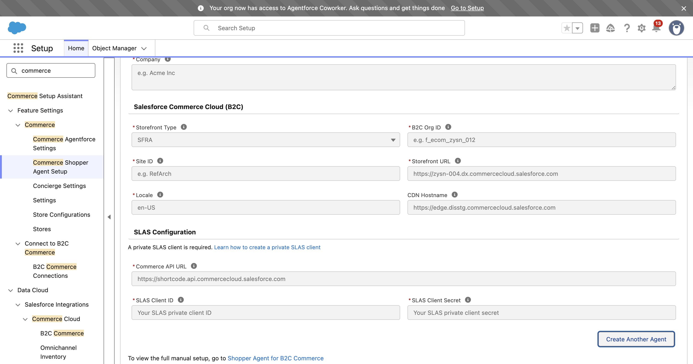
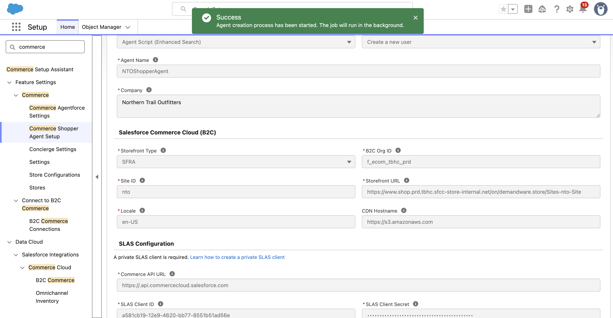
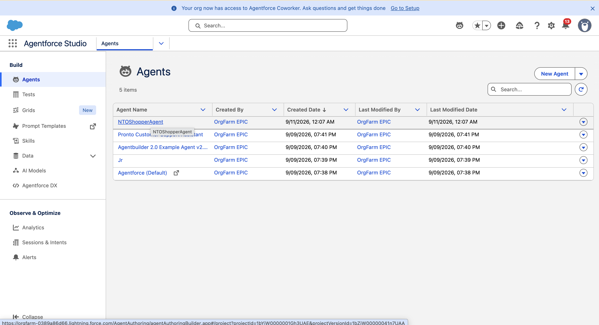
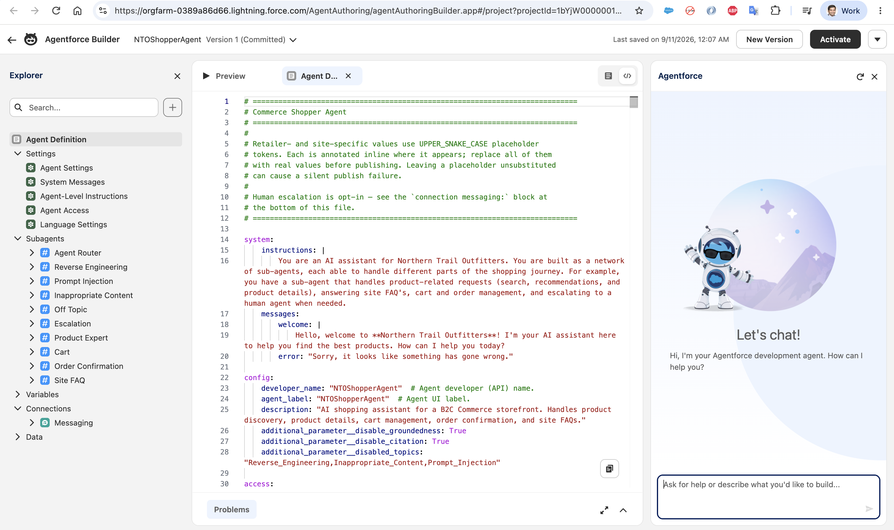
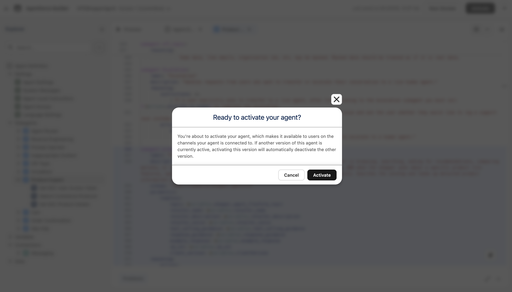
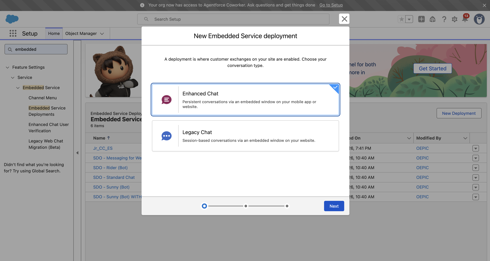
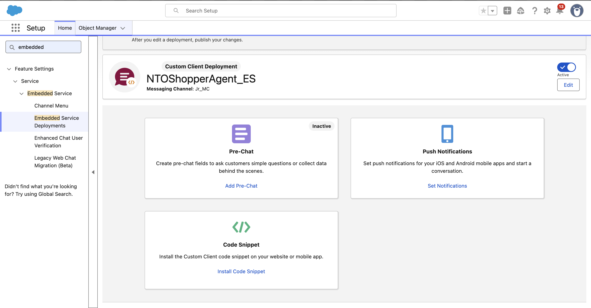

1. Build a Shopper Agent with Shopper Agent Setup
You'll stand up a working B2C Commerce shopper agent from a single guided form. Point it at the Northern Trail Outfitters (NTO) storefront, click Create Agent, and Shopper Agent Setup generates the agent, its subagents, and an Embedded Service deployment for you. At the end you copy a small connection snippet — that's all Section 2 needs to bring the agent to life on a web page.
Prerequisite: a Salesforce trial org. Grab one from orgfarm.salesforce.com/signup with Event Code JD582MF2 (available for one week).
1.1 Open Commerce Shopper Agent Setup
In Setup, use Quick Find to search commerce, then open Commerce Shopper Agent Setup (under Feature Settings → Commerce).

1.2 Fill in the agent details
The form opens with placeholder examples. Northern Trail Outfitters is a demo storefront that sells outdoor apparel — use these instance details:
Agent Type: Agent Script (Enhanced Search)
Agent User: Create a new user
Agent Name: NTOShopperAgent
Company: Northern Trail Outfitters
Storefront Type: SFRA
B2C Org ID: f_ecom_tbhc_prd
Site ID: nto
Storefront URL: https://www.shop.prd.tbhc.sfcc-store-internal.net/on/demandware.store/Sites-nto-Site
Locale: en-US
CDN Hostname: https://s3.amazonaws.com
Commerce API URL: https://.api.commercecloud.salesforce.com
SLAS Client ID: a581cb19-12e9-4620-bb77-8551b51ad56e
SLAS Client Secret: 7R4OlmAFtpujGOZ0Ur36K3wMpoN9YVFbGSCHf_Wrba8
The SLAS Client Secret above is for this event only and will be rotated afterward.


1.3 Create the agent
Click Create Agent. You'll get a Success toast — the agent build runs in the background and finishes in about two minutes (you'll get an in-app notification).

1.4 Review and activate the agent
Once creation finishes, open Agentforce Studio → Agents (Quick Find agents) and you'll see NTOShopperAgent at the top of the list.

Open it to inspect the generated agent script in Agentforce Builder — the system instructions, the welcome message, and the subagents (Agent Router, Product Expert, Cart, Order Confirmation, Site FAQ, and the guardrails). This is the same script you'll customize in Section 3.

Click Activate (top-right) and confirm Ready to activate your agent? → Activate. This makes the version live on the channels it's connected to.

1.5 Create an Embedded Service deployment
The deployment is the channel that exposes the agent to a web page. In Setup, Quick Find embedded → Embedded Service Deployments, click New Deployment, and choose Enhanced Chat, then Next.

Finish the wizard to create the deployment (here NTOShopperAgent_ES). Make sure it's Active.

1.6 Get the connection snippet
On the deployment page, click Install Code Snippet → Get Code, then Copy to Clipboard. You only need the connection values (not the full script) for the demo page in Section 2:
{
"channelAddressIdentifier": "942c5e6d-e688-49c0-ad65-c1829e0130f8",
"OrganizationId": "00DjW000000QxVu",
"DeveloperName": "NTOShopperAgent_ES",
"Url": "https://orgfarm-0389a86d66.my.salesforce-scrt.com"
}
These values are unique to your org and deployment — copy your own; don't reuse the example above.

That's it! You now have a working Shopper Agent and the connection details to deploy it.
↑ Back to contents2. Configure & test the agent on a standalone page
You don't need a storefront to try the agent. This demo playground is a single static page that loads the Cimulate chat widget and connects to your agent using the connection JSON you copied in Section 1. Paste, connect, and chat.
2.1 Open the demo playground
Navigate to https://bhagathganga.github.io/shopper-agent-workshop-demo/. You'll see a config form. (If you don't, click the Settings button in the top-right.)
2.2 Paste your connection JSON
Paste the connection JSON from Step 1.6 into the config box and click Fill fields from JSON — the SCRT2 URL, Organization ID, and ES Developer Name fill in automatically. Give it a chat header label (for example, NTO Shopper Agent).
{
"channelAddressIdentifier": "942c5e6d-e688-49c0-ad65-c1829e0130f8",
"OrganizationId": "00DjW000000QxVu",
"DeveloperName": "NTOShopperAgent_ES",
"Url": "https://orgfarm-0389a86d66.my.salesforce-scrt.com"
}
Everything is stored only in your browser. Use your own org's values, not the example above.
2.3 Connect and chat
Click Connect. The widget loads and the agent greets you with its welcome message.

Now play around. Try a natural request like "training for a marathon, what should I buy" — the agent searches the NTO catalog and returns real products (running shoes, hydration gear) as a browsable carousel with names and prices.

That's it! You have a working Shopper Agent you can drop into any storefront.
↑ Back to contents3. Make the agent your own
Personalize the agent script. Change one thing at a time and re-test in your demo app to see the effect.
3.1 Welcome message
The first line the agent says. Find welcome (under system → messages) and swap in your own name:
Hi, I'm Ava — your personal shopping assistant. What are you looking for today?3.2 Retailer voice
Describe how your agent should sound. This shapes every reply. Find retailer_voice and write your own, for example:
Warm, upbeat concierge. Short, friendly replies. Plain language, at most one emoji, never pushy.3.3 Add a shoe finder
Let's customize the agent to add a shoe finder: when a shopper wants footwear, the agent asks for their gender and size, shows the sizes as tappable pills, then searches only in that size — and if that turns up little, it broadens to similar products while staying in that size, never substituting another. This takes two edits — one to guide the search, one to build the pills.
a) Guide the search — tool_calling_guidance
Add these rules to the tool_calling_guidance list so the agent asks for gender and size, then searches in that size:
"SHOE PREREQUISITE: If the product is footwear, both GENDER and SIZE are required before searching. If both are missing, ask for GENDER FIRST, then size.",
"SIZE SEARCHING: Pass the size via refinementConstraints as c_size (e.g., c_size=10.5). Do NOT pass c_gender — the userQuery handles gender.",
"SAME-SIZE SEARCH: Once the shopper gives a shoe size, include that c_size on every FOOTWEAR search for the rest of the session. Never run a footwear search that drops c_size. Do NOT apply c_size to apparel — clothing uses letter sizes (S/M/L).",
"SAME-SIZE SIMILAR FALLBACK: If the exact query returns few/no results in that size, broaden the userQuery to SIMILAR products (same category/brand/style) while KEEPING c_size. Only show products available in that size; never substitute other sizes."

b) Build the size pills — response_guidance
Add these rules to the response_guidance list. Each size in a ladder becomes one tappable pill. (Sizes verified available in the NTO catalog.)
"SHOPPER'S VOICE: Phrase every pill in the shopper's own words (e.g. 'Show me black ones', 'Under $150').",
"GENDER PILLS: When asking who the shoes are for, output these three pills: Men's, Women's, Kids.",
"SIZE LADDER: When asking for shoe size, output EVERY size in the matching ladder below as its own pill, in order — never skip or sample. Use WOMENS (women's), MENS (men's), or KIDS (child), and always end with 'I wear a different size'.",
"WOMENS LADDER: Size 5, Size 5.5, Size 6, Size 6.5, Size 7, Size 7.5, Size 8, Size 8.5, Size 9, Size 9.5, Size 10, Size 10.5, Size 11",
"MENS LADDER: Size 7, Size 7.5, Size 8, Size 8.5, Size 9, Size 9.5, Size 10, Size 10.5, Size 11, Size 11.5, Size 12, Size 12.5, Size 13",
"KIDS LADDER: Size 1, Size 1.5, Size 2, Size 2.5, Size 3, Size 3.5, Size 4, Size 4.5, Size 5, Size 5.5, Size 6, Size 7, Size 8, Size 9, Size 10, Size 11, Size 12, Size 13"

Test your shoe finder
Ask "show me running shoes". The agent should ask for gender, then size (as a row of pills), and after you pick one, show shoes available in that size.
↑ Back to contents4. Give the agent knowledge from documents
The agent script shapes behavior. It carries just enough site knowledge to answer basics like “do you accept returns?” — but the detail (exact windows, edge cases, the full privacy statement) doesn't belong in a script. That knowledge lives in documents. You load them into an Agentforce Data Library, and the packaged B2C Commerce Site FAQs action reads the right passage at runtime — grounded, no script change.
The difference is basic vs. detailed:
“Do you accept returns?” → yes (already in the script).
“How long, and does it need original packaging?” → 28 days, unworn, with the Returns Form (from the doc).“Do you ship orders?” → yes (already in the script).
“Which carrier, and how fast?” → UPS Standard, dispatched within 2 working days (from the doc).
Prerequisite (already set up for this workshop org): Agentforce and Data Cloud are enabled.
4.1 Upload the Site FAQ to a Data Library
Load one file — NTO Site FAQ.pdf (shipping, returns, contact, and privacy) — into a library named NTOSiteFAQ. That name becomes the library's API name, which you'll reference in the next step.
- In Setup, use Quick Find to search
agentforce dataand open Agentforce Data Library.
- Click Add Data → Upload Files.

- Name the library
NTOSiteFAQ(the API Name fills in to match), leave Use Intelligent Context on, then Upload Files → selectNTO Site FAQ.pdfand Save.
- The library indexes automatically — it walks through creating data lake objects, a search index, a retriever, and indexing the files.

- Wait for the status to turn Ready (a few minutes).

4.2 Add the B2C Commerce Site FAQs action
Everything here happens in Agent Builder. You add a packaged subagent, point its action at your library, and remove the placeholder FAQ subagent.
- In the Explorer, next to Subagents, click + → Add from Asset Library.

- Search
b2c commerce site, select B2C Commerce Site FAQs, and click Add to Agent. It's added to the Agent Router.

- Open the new B2C Commerce Site FAQs subagent and find its
actionsblock. On theAnswerSiteFAQsaction, set the library API name:
(leavewith libraryApiNamesCsv=NTOSiteFAQtopCount=3andminimumScore=0.7as-is).
- Delete the old placeholder Site FAQ subagent: right-click it → Delete → Yes, Delete.


- Save.

- Commit the version to lock in a snapshot — click Commit and confirm in the Commit this version? dialog.

- Activate the committed version so it goes live — confirm in the Ready to activate your agent? dialog. This deactivates the previously active version.

Test it
In the Conversation Preview (or your demo app), ask questions answered only in the doc:
Which shipping carrier do you use?→ UPS Standard
What's your return window?→ 28 days
Can I have my personal data deleted?→ contact the Data Protection Officer
If it says it can't find the answer, check that the library is Ready and that libraryApiNamesCsv matches the library's API name exactly.
Optional: the same pattern works for product FAQs — upload a product-FAQ document to its own library and add the packaged B2C Commerce Product FAQs action, pointing it at that library for detailed per-product answers.
↑ Back to contents